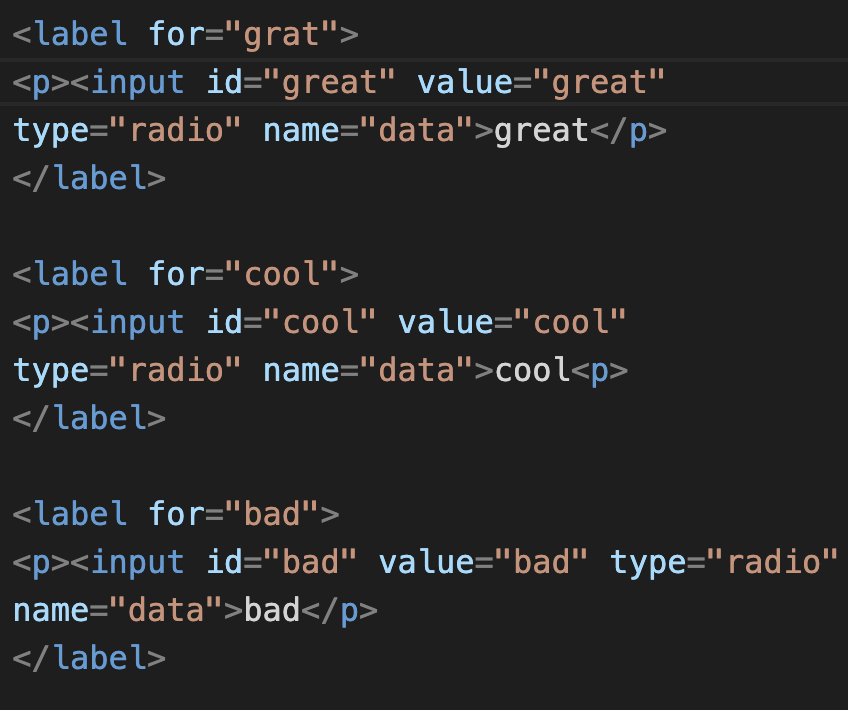
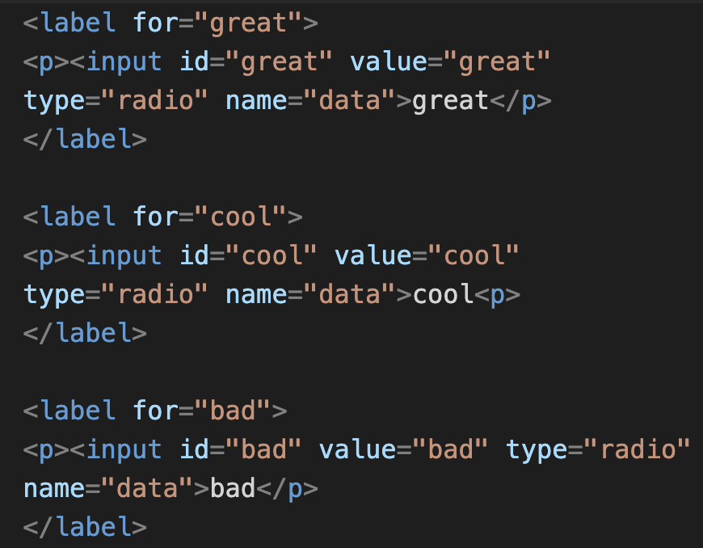

Movie Webpage Project
Context
The instructions of this project were to create a movie webpage with my partner and using my skills of basic CSS and HTML to create a website trailer or showcase of the movie The purpose of this project is to make it so that we could implement our learning on basic html and css to this new project. This project also is important because it teaches students how to organize and plan out work before fully developing the final project aswell as using teamwork to help in acomplishing a diffucult task.
This project required me to do a few steps in order for me get full credit:
- I first needed to create a plan.md file to plan out the content of the movie, planning out the different elements, properties, and selectiors and who would do what parts for the project.
- Next, I needed to implement the plannings I had for my HTML and CSS and place it onto my code.
- I needed to use specific css and html elements, properties and, selectors in order to get full credit. Some of the requierments were to include margin and padding properties, including one form element EX: radio buttons, using, using 2 selectors such as id, and class selectors, and I needed to include some paragraphs and headings in my code.
- lastly I needed to complete a form to submit all of my work and get a final grade.
Me and my partner decided the name of the movie would be called The Lost Witness. We had more of a inspiration towards the movie mazerunner. The movie is basically an action/horror/triller in which the main character tries to escape a maze with the help of other people named maze runners and they are able to escape not realizing that they have more obstacles to overcome We decided to evenly split out the tasks we were doing. So my partner and I did parts of CSS I did the plan.md section and the html were also evenly done.
challenges that I faced:
fixing the radio buttons
I was struggling with making the radio buttons so that only one could be clicked.
At first I tried to change thename="" attribute to name="data" so that the radio buttons inside the label tags could only click one radio button at a time but that didnt work
So... I checked my radio elements in my html and I realized that there was alot of spelling errors in my id attributes.
One of my id attributes instead of being shown as label for= "great" it was accidentally changed to label for= "grat" which made only a few of the radio buttons to be selected
I quickly made sure to change all my form elements and tags so that the buttons could be clicked on seperately and it worked!
heres the code before:
heres the code after:
takeaways
this project taught me the importance of always double checking and organizing your work before you end up submitting. If I didnt take the time to check over the spelling errors that I had made for the different id elements then I would have never been able to solve the problem within the html
This project also taught me the importance on asking for help when needed. The process on solving this problem could
have been solved easily if I just got help from my partner or if I got help from a teacher and because of that the process took alot more longer.
Next steps
Im excited to see what other websites Im able to create in my future projects!